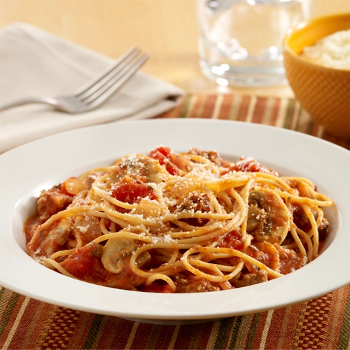

Spaghetti

Spaghetti with Meat Sauce and Mushrooms
Ingredients
- PAM® Original No-Stick Cooking Spray
- 1 pkg (8 oz each) sliced fresh mushrooms
- 1/2 pound lean ground beed (93% lean)
- 1/2 cup chopped yellow onion
- 1 tablespoon finely chopped garlic
- 1 can (28 oz each) Hunt's® Whole Peeled Plum Tomatoes-No Salt Added, drained, liquid reserved
- 2 cups (16 oz) Hunt's® Tomato Sauce-No Salt Added
- 3/4 cup grated Parmesan cheese, divided
- 2 teaspoons beef bouillon granules
- 1-1/2 teaspoons dried Italian seasoning
- 8 ounces dry multigrain spaghetti, uncooked
Directions
- Spray large saucepan with cooking spray; heat over medium-high heat. Add mushrooms, beef and onion; cook 5 minutes or until beef is crumbled and no longer pink, stirring occasionally. Add garlic; cook 1 minute more or until fragrant.
- Crush tomatoes with hands; add to saucepan. Add reserved tomato liquid, tomato sauce, 1/2 cup cheese, bouillon granules and Italian seasoning; stir to combine. Bring to a boil. Reduce heat; simmer 30 minutes or until sauce has thickened slightly, stirring occasionally.
- Meanwhile, cook spaghetti according to package directions; drain. Add spaghetti to saucepan; toss to combine. Cook over low heat 2 minutes or until sauce and spaghetti are hot. Sprinkle with remaining 1/4 cup cheese just before serving.